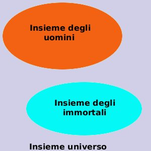

|
Mostriamo che, mediante la teoria degli insiemi, e' possibile evidenziare la verita' o meno del giudizio universale negativo: Partiamo dal nostro giudizio: Per ogni uomo x, se x e' un uomo allora x non e' immortale  Considero gli insiemi P(x) = { x : x e' un uomo } Q(x) = { x : x e' immmortale } considero la negazione della seconda Q(x)___= { x : x non e' immmortale } la scrittura x, P(x) -> Q(x)___ implica che l'insieme P(x) e' contenuto nell'insieme complementare di Q(x) quindi e' vera solamente se P(x) non ha elementi comuni con Q(x); equivale a dire che P(x) e Q(x) sono insiemi disgiunti P(x) Come avrai notato la negazione di una proposizione corrisponde al complementare dell'insieme collegato |